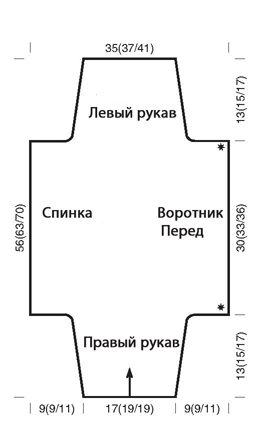
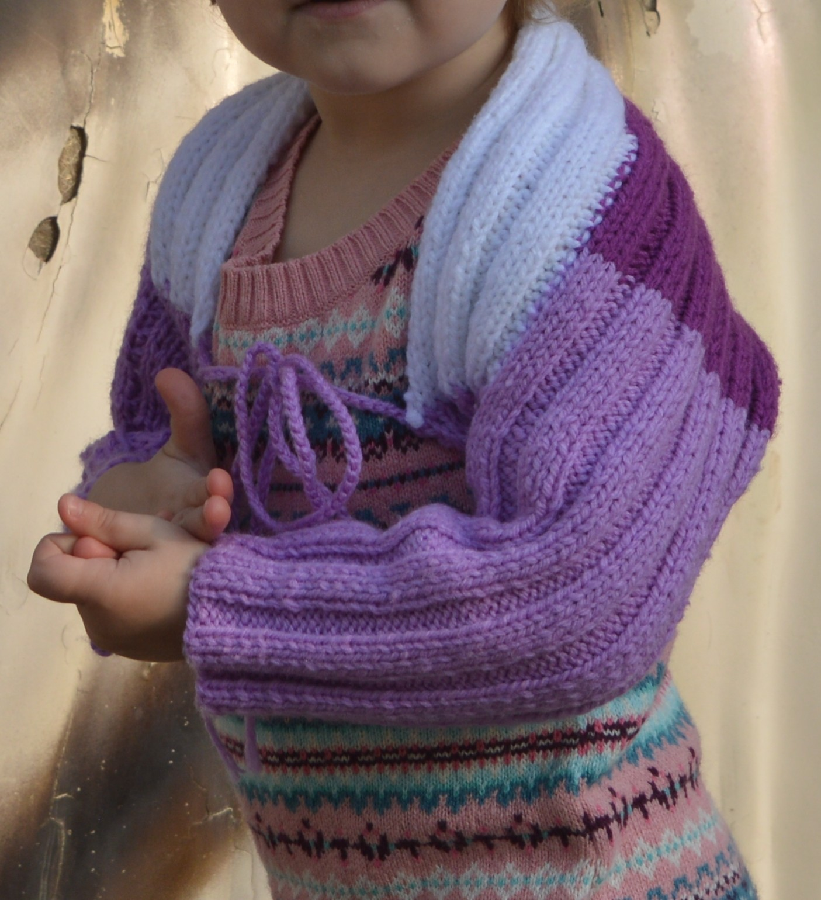
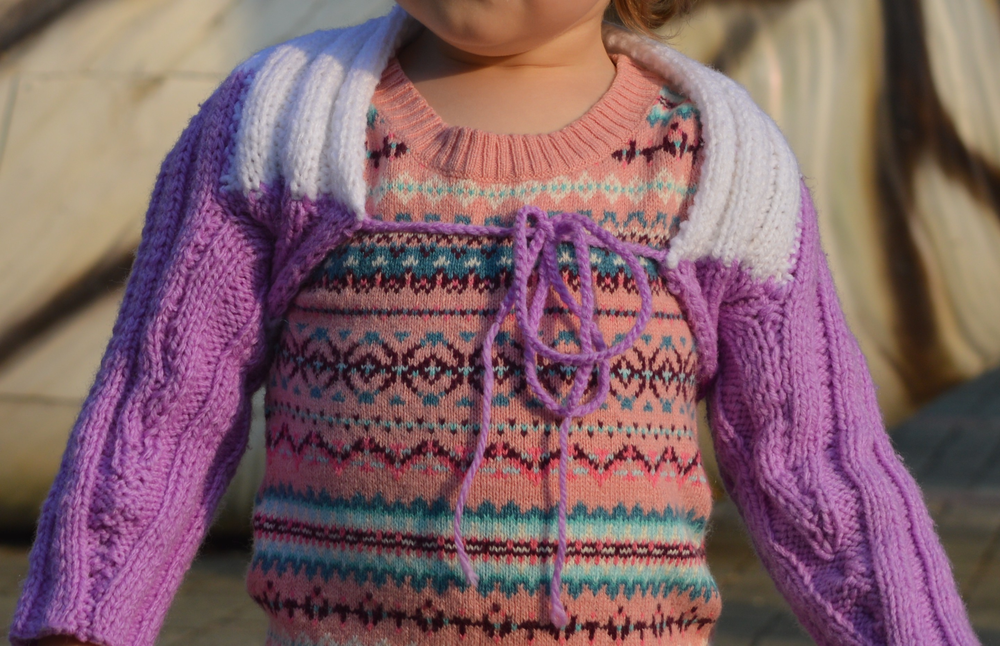

Болеро
Возраст: 1-2 месяца (7-9 месяцев; 1-2 года)
Размеры: 62‑68 (74‑80; 86‑92)
Вам потребуется:
- 100 (125; 150) пряжи
- прямые спицы № 2,5 и 3,5
Узоры:
Резинка: попеременно 2 лиц., 2 изн.
Узор тройная резинка: 3 лиц., 3 изн.
Плотность вязания, узор из кос: 34 п. и 34 р. = 10 x 10 см.
Описание

Рукав
Набираем 53 петли (59 петель; 59 петель), начинаем с 1-го изнаночного ряда, после кромочной петли начинаем тройную резинку, выполнив первыми с 3 изнаночные петли. Одновременно прибавляем для формирования скоса рукава 1 раз по 1 петле в 8-м ряду (8-м ряду; 6-м ряду), далее: для 1-2 месяцев ‑ в следующем 8-м ряду 1 раз 1 петлю и в каждом 6-м ряду 4 раза по 1 петле (для 7-9 месяцев — в каждом 8-м ряду 5 раз 1 петле; для 1-2 лет — в каждом 6-м ряду 8 раз по 1 петле). Итого должно получиться 65 петель (71 петля; 77 петель). Далее прибавляем в каждом 2-м ряду 3 раза по 1 петле. Таким образом должно получиться 71 петель (77 петель; 83 петли) после 46-го ряда (54-го ряда; 60-го ряда).
Спинка
Для выполнения воротника набираем в конце следующего изнаночного ряда 18 новых петель (18 новых петель; 21 новую петлю), следующий лицевой ряд начинаем после кромочных петель с 3 изнаночных петель и в конце лицевого ряда набираем 18 новых петель (18 новых петель; 21 новую петлю) для выполнения спинки. Должно образоваться 107 петель (113 петель; 125 петель). Следующий изнаночный ряд начинаем с 3-х лицевых петель.
Рукав
Провязываем далее 30 см (33 см; 36 см), что равно 108 рядам (118 рядам; 130 рядам), по прямой, затем закрываем с обеих сторон 18 петель (18 петель; 21 петлю) п. и в каждом 2-м ряду 4 раза по 1 петле. Итого получаем 63 петли (69 петель; 75 петель) для левого рукава. Далее убавляем для формирования скоса рукава с обеих сторон так: для болеро на девочку 1-2 месяцев — в каждом 6-м ряду 4 раза по 1 петле и в следующем 8-м ряду 1 раз 1 петлю (для болеро на девочку 7-9 месяцев — в каждом 8-м ряду 5 раз по 1 петле; для болеро на девочку 1-2 лет — в каждом 6-м ряду 8 раз по 1 петел). Для выполнения убавления провязываем в начале ряда кромочную петлю и следующую петлю, в конце ряда петлю перед кромочной и следующую петлю лицевой или изнаночной в соответствии с рисунком. Итого получаем 53 петли (59 петель; 59 петель) п. На высоте 56 см (63 см; 70 см) см, что равняется 202 рядам (228 рядам; 252 рядам) от начала работы, закрываем все петли.
Сборка
Соединить швы на рукавах и привязать ленточки.
Результат


Comments
comments powered by Disqus